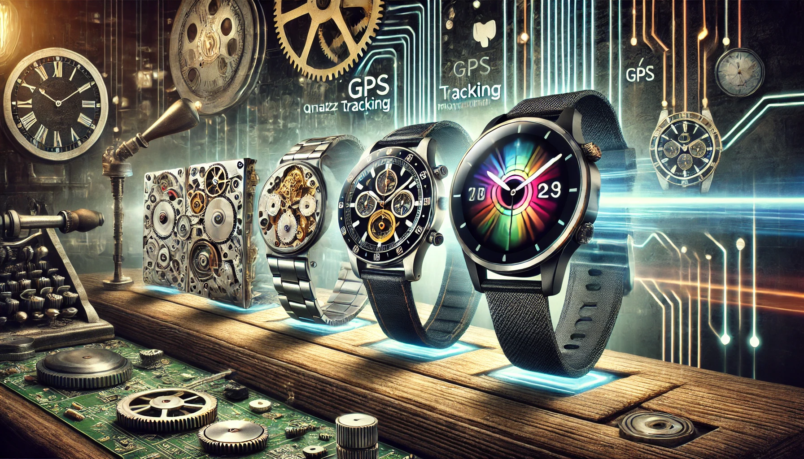

About Technology
The evolution of watches has been deeply intertwined with technological advancement. From the intricate mechanical gears of traditional timepieces to the sophisticated microprocessors in modern smartwatches, technology has constantly redefined what a watch can do. More recent innovations, such as GPS tracking, heart rate monitoring, and connectivity with smartphones, have transformed watches into multifunctional gadgets. These developments not only enhance user experience but also extend the usefulness of watches far beyond timekeeping. Read More
